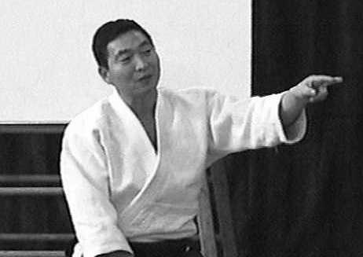

| INICIO | CLASES | TÉCNICAS | VIDEOS | SALUD | SEMINARIO | ORGANIZACIONES | HISTORIA | TEXTOS | BIBLIOGRAFÍA | LINKS |

Textos Recomendados
Yoshigasaki Doshu habla sobre que es el Aikido, su historia y aborda la explicación sobre la autodefensa. Un texto único para el entendimiento de lo que significan las artes marciales.
Que es Aikido
En todo el mundo las personas acostumbraban pelear usando espadas, lanzas y otras armas, y cuando no tenian armas a mano, boxeaban o luchaban. Las técnicas de pelea fueron casi las mismas en todo el mundo hasta la invención de las armas de fuego. El uso de armas de fuego, cambió completamente la forma de pelear en la guerra. En Japón este tipo de armas fueron importadas por los Portugueses en 1543 y los Japoneses rápidamente comenzaron su propia fabricación. Alrededor de 1590 fueron usadas en la guerra y probaron ser mas eficientes que las armas tradicionales. Sin embargo, el uso de armas fué limitado por las condiciones de fabricación. Alrededor del año 1600 Japón fue dominado por el Clan Tokugawa, que tuvo éxito al crear un sistema de dominación a través de los samurais. Para estabilizar su dominación, prohibieron la producción y el uso de armas, asi como la comunicación con el mundo exterior. Esto dió la oportunidad de desarrollar métodos de pelea sin armas durante dos siglos y medio, mientras que en Europa las armas de fuego fueron desarrolladas como la principal arma de combate.
Desde el 1800, Europa comenzo a colonizar China. Los Europeos no estaban interesados en Japón, porque era demasiado pequeño comparado con China. Sin embargo los Estados Unidos también querían participar de la colonización de China. Alrededor de 1860 la armada de Estados Unidos fue a Japón y los forzó a darles un puerto como su territorio. Entonces, los países Europeos también querían usar el puerto, y así Japón estaba en peligro de ser colonizado como China. Japón, decidió crear un ejército fuerte para defenderse de Estados Unidos y de Europa, por eso se prohibió la espada y se creó un ejercito con armas de fuego.
Los clanes de Samurai que mantenían la tradición de las técnicas de espada estaban infelices y trataron de mantener la tradición. Una forma, era convertir las técnicas en deportes. Así, se creó el Judo, el Kendo y siguió el Karate. Aquellos tipos de deportes de artes marciales fueron sostenidos por estudiantes universitarios. Aquellos que no querían la forma deportiva llamaron a estas artes Kobudo o Jujitsu. Uno de los Jujitsu se llamó Daitoryu Jujitsu y esta fue la base tecnica del Aikido. Es necesario saber que las técnicas de Judo vienen de artes marciales que no usaban espada y lo mismo fué con el Karate. Por eso es que las técnicas de Karate incluyen técnicas de palo, pero no de espada. El Kendo, se basó en tecnicas de espada pero se transformó en deporte. Daitoryu Jujitsu fué creado por alguien que le gustaba la espada y era bueno en estas técnicas. Él, desarrolló las técnicas sin armas, usando su habilidad en el uso de la espada. Esto es por lo que las técnicas de Daitoryu Jujitsu son muy diferentes de las técnicas de Judo o de Karate.
En realidad, las técnicas Daitoryu son muy similares a las de Kendo. Sin embargo, por la forma en que las técnicas son practicadas, las personas se olvidaron de la espada y piensan en la situación de pelea callejera en su sociedad. Después de la segunda guerra mundial, había una idea general que Japón no debía pelear y que la gente no tenía armas de fuego,ni espadas. La gente pensó en peleas callejeras sin armas, o tal vez con palo o cuchillo.Por eso, en aquella situación, nació el nuevo nombre de Aikido. La idea de Aikido era la de controlar la situación sin pelear. Esta mentalidad correspondió a la tendencia en Estados Unidos y Europa después de 1960 y el Aikido comenzo a ser sostenido filosóficamente. La idea de resolver conflictos sin pelear, devino parte de la filosofía del Aikido.
Luego, vino la idea de autodefensa. Que es autodefensa?. En realidad, no hay diferencia entre ataque y defensa. Cuando uno realiza una acción hacia otro, se lo llama ataque. Entonces, el otro hace lo mismo y a esto se lo llama defensa. Por eso la defensa se permite solo cuando uno es atacado. Si el ataque viene sin arma, es posible esperar hasta que el ataque venga y hacer algo con este. Pero si el ataque es hecho con armas de fuego y otras armas altamente desarrolladas, es casi imposible defenderse despues que el ataque comenzó. Esto significa que uno debe disparar antes que el otro me dispare.Entonces, apareció la cuestion de conocer la intención del otro. Si una persona tiene un arma en su mano, el policía duda de su intención, por eso le demanda que inmediatamente arroje el arma y que ponga ambas manos arriba. Pero, si está oscuro, que debe hacer el policia?. Puede ser que el policia esté obligado a disparar antes que sea posible para la otra persona dispararle a él. Entonces hay una pregunta, y es si el policía juzgó la situación correctamente o no. Si el ataque y la defensa sucede entre dos países, es más complicado. Primero un país es atacado, pero es difícil saber quién atacó. Entonces el país puede asumir que el ataque fue hecho por el país enemigo y comienza a atacarlo en nombre de la defensa. Entre dos seres humanos, a esto se lo llama venganza y esta prohibido por la ley. Sin embargo el gobierno puede castigar al criminal y por eso la víctima no tiene que tomar venganza. Entre dos países, no hay autoridad por encima de ellos, y por eso la venganza esta permitida. De nuevo, no es facil distinguir la venganza de la defensa. Todo el problema viene porque el acto del ataque, venganza y defensa son lo mismo. Es solo un asunto de interpretación.
En Aikido es posible crear una filosofía completamente nueva. Aikido no tiene que ser autodefensa. La defensa es lo mismo que el ataque. Aikido es un camino para crear situaciones en la que el ataque es dificil que suceda. Si el ataque no sucede, la defensa no es necesaria. Yo pienso que es el único camino para la paz.